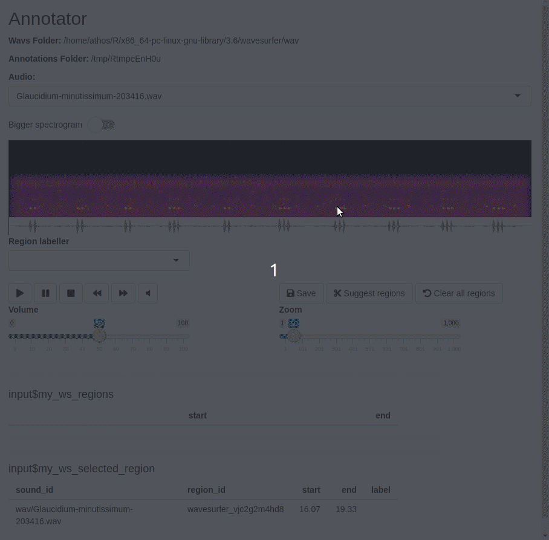

data-annotation.Rmdlibrary(mestrado)
Annotate audio is the most laborous (and maybe tedious) part of any machine learning project. You are lucky if the labels are already there for you. The main package in this section is {wavesurfer}.
# remotes::install_github("athospd/wavesurfer") library(wavesurfer)
Here it is a working example:
where_I_want_to_store_the_annotations <- tempdir() annotator_app( wavs_folder = system.file("wav_sample", package = "mestrado"), annotations_folder = where_I_want_to_store_the_annotations )
The inputs are two folders: one indicating where the wave files are and other indicating where you want to store the acutal annotations. The Shiny app migth look like this:

The final product of each annotation is a tibble. Example follows:
| audio_id | region_id | start | end | label |
|---|---|---|---|---|
| Megascops-atricapilla-99919.wav | ho1og8fj7p | 3.99 | 13.31 | Megascops-atricapilla |
| Megascops-atricapilla-99919.wav | 2d1ct319olo | 47.93 | 55.67 | Megascops-atricapilla |
And that’s all! Once annotated, you are ready to go to the labelling task.